Karnataka Public Finance · v0.2.0-draft
Eleven years of Karnataka's expenditure, lifted out of 77 PDFs into machine-readable rows — every number kept next to the page it came from. Here is what that buys a researcher.
The long view
Apply the additive-leaf rule once and the whole state resolves into one series. Karnataka's planned expenditure rose from ₹1.78 lakh crore to ₹4.48 lakh crore across the decade. The shaded slab is committed spend — salaries, pensions and interest — the part no government can switch off.

The committed slab widened from 19% of the budget to 30% in ten years. Three rupees in ten are now spoken for before a single new scheme is funded.
The whole cabinet, at once
The budget is voted as numbered demands. We transcribed the names from the seven volume covers
shipped in the package, so the data reads in plain English: Education, Energy, Health, Irrigation — not "D17, D24, D22, D21".
One GROUP BY demand_number ranks the entire government by what it actually spent.

Plan meets reality
Because every year carries Budget, Revised and Actuals, you can score each department on execution. The ratio of Actuals to Budget (Act/BE) exposes discipline the headline number hides.
| Department | Act/BE |
|---|---|
| Energy | 1.36 |
| Revenue | 1.33 |
| Social Welfare | 1.10 |
| Irrigation | 1.08 |
| Department | Act/BE |
|---|---|
| Co-operation | 0.71 |
| Finance | 0.80 |
| Labour & Skill Development | 0.80 |
| Education | 0.84 |
validation_findings.csv and source PDFs let you chase down rather than guess at.All the way down
The same table drills through six classification tiers. Start at the full budget and descend to one
object head — and every rung still carries source_file,
page_number and row_number.
A reader can go from "what did Karnataka spend?" to "which line on which page?" without leaving the dataset. That is the difference between a PDF and data.
Built to be trusted
This is a research draft, and it says so. Rather than a single pass/fail stamp, the package ships its own evidence so you can decide what to rely on.
Each row records its source_file, page_number and row_number, so any figure traces back to a specific page of a specific PDF.
Internal accounting identities (object-head leaves summing to printed totals) are tested and shipped in checks_<year>.csv; 25,317 rows are flagged in validation_findings.csv.
Known issues — uncertified units, positional year columns on 2016-17→2022-23, OCR outliers — are documented in known_caveats.md and handled in the example code.